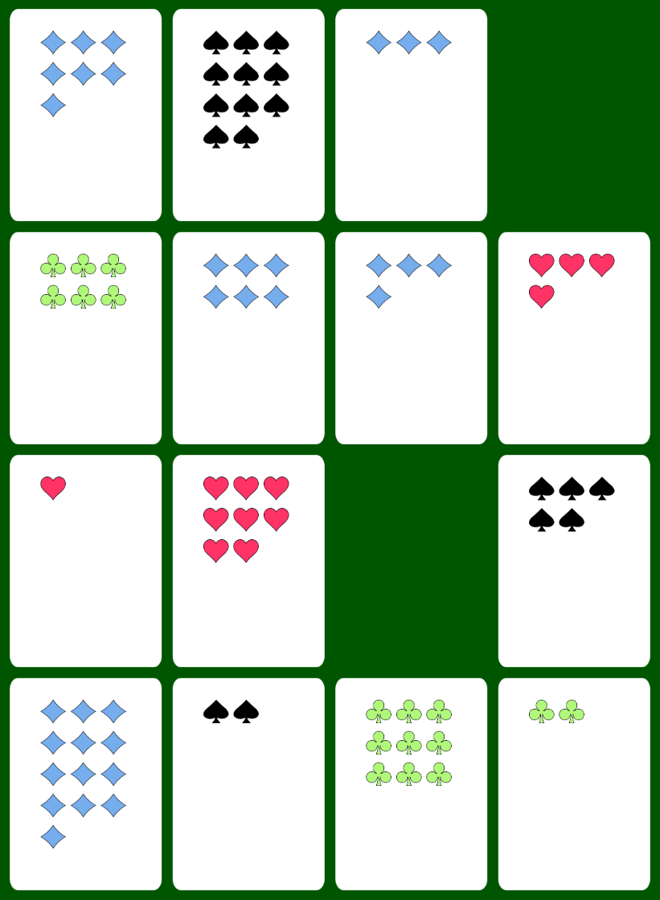
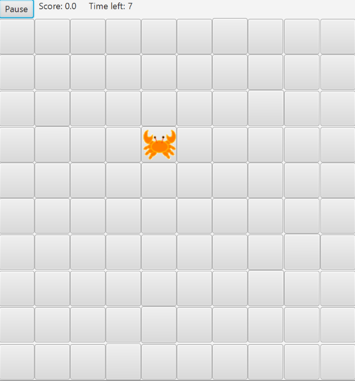
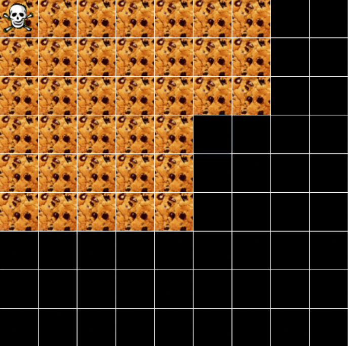

My name is Ryzeson and this is my personal website. Please take a look around!
| Birds of a Feather | Whack-a-Crab | Chomp |
|  |  |  |
Being a good quizbowler means taking some notes. There are always more things to learn, but here are some of the topics where my notes are rather comprehensive.
"It’s the sum total of every expressive medium of all time made interactive… it's awesome."
Click here to take a look at all of the games I have ever beaten.
Or here to check out a list of good video game music I have come across.